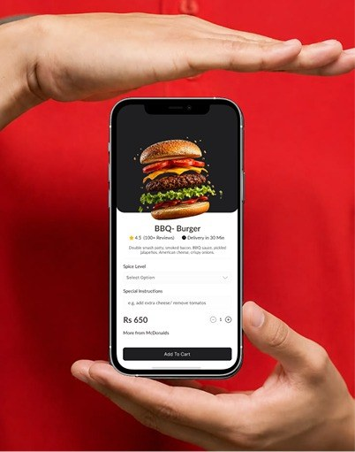
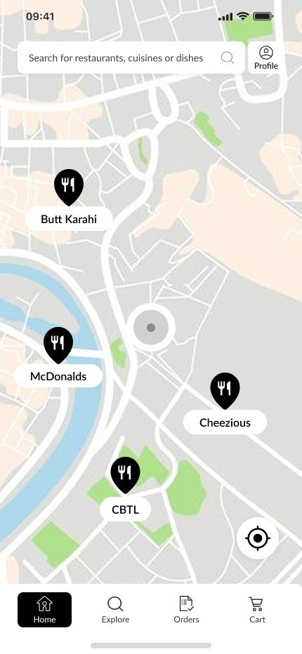
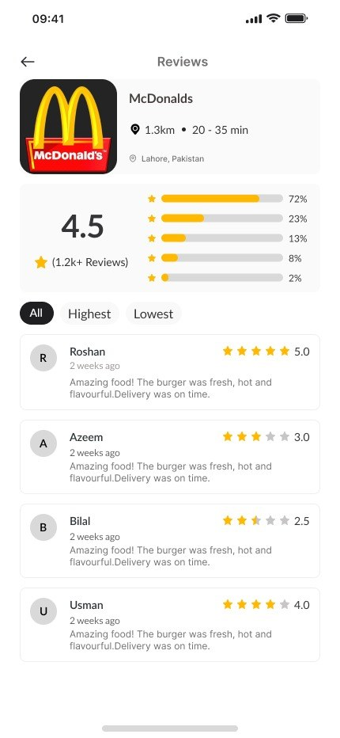
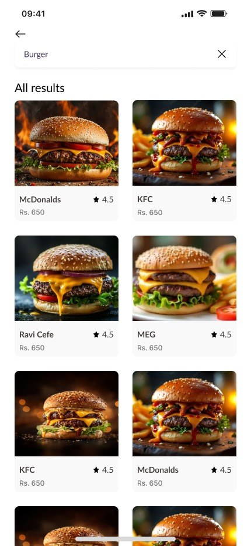
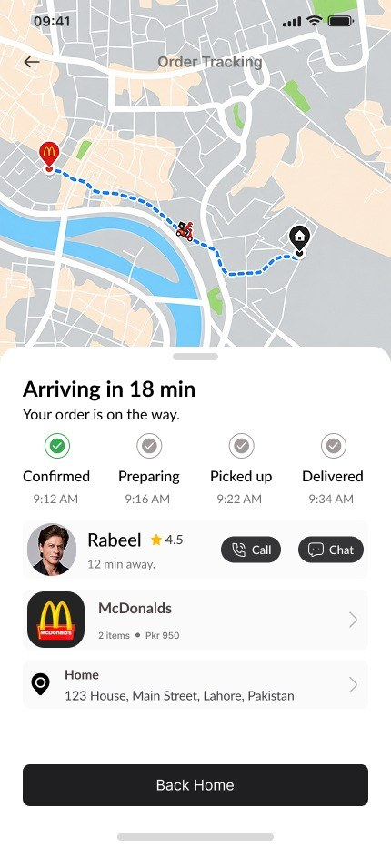
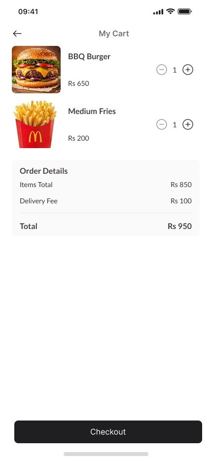
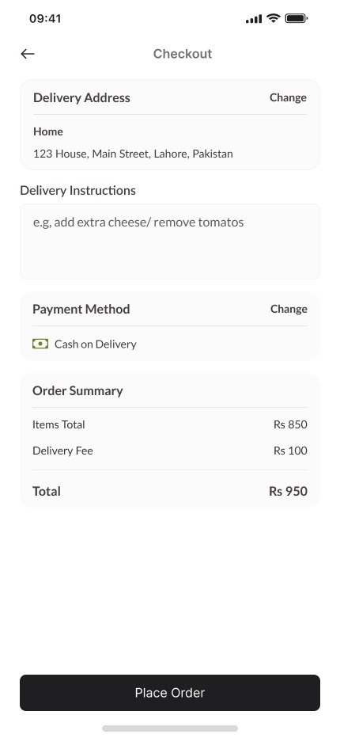
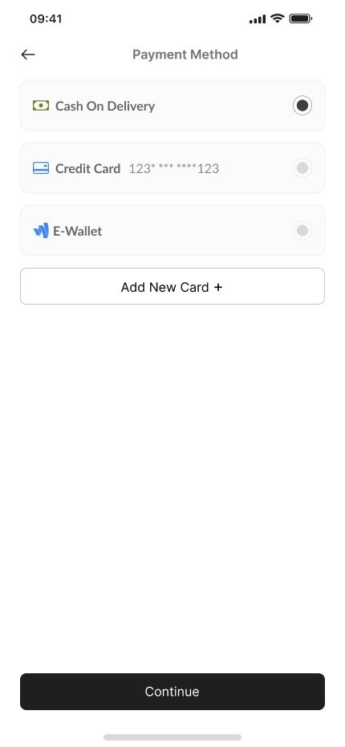
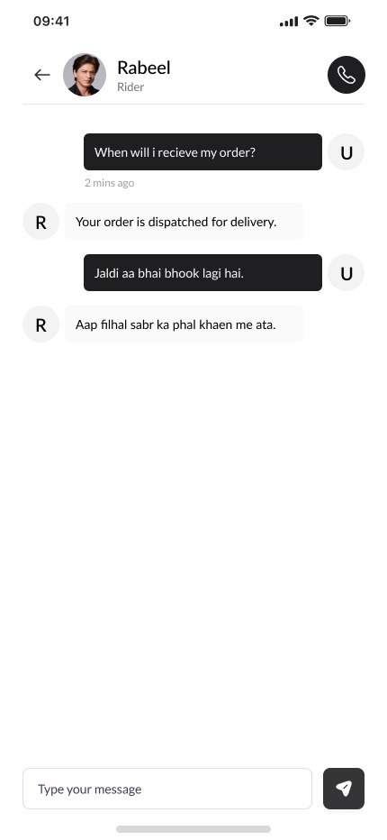

Bite Rush
A fast and convenient food delivery experience that helps users discover restaurants, order their favorite meals and track deliveries with ease.

From craving to doorstep, in just a few taps
Ordering food often means jumping between apps, long menus and checkouts that ask for too much. Bite Rush brings restaurants, menus and delivery into one simple flow for busy people who just want their meal fast.
- 01The problemCluttered menus and long checkouts slow hungry users down.
- 02The solutionA clean, monochrome UI where food photos stand out, with a short path from dish to checkout.
- 03My roleUser flows, wireframes, visual design and an interactive prototype.
Design Process
- 01
Research
Studied popular delivery apps and listed the pain points users face when ordering.
- 02
User Flow
Mapped the journey from finding a restaurant to placing and tracking an order.
- 03
Wireframes
Sketched low-fidelity layouts to plan content and keep every screen simple.
- 04
Visual Design
Built the final monochrome UI with Lato and Inter so food photos stand out.
- 05
Prototype
Linked the screens in Figma into a clickable prototype to test the flow.
Designed around how people really order
Hover or tap a feature to see it in the app.

Typography
A warm, rounded sans-serif that keeps headings and prices bold and easy to scan.
- Light
- Regular
- Bold
- Black
A clean, highly readable typeface for descriptions, buttons and small details like ratings and delivery times.
- Regular
- Medium
- Semibold
- Bold
Colors
All Screens
The complete ordering journey, from finding a restaurant on the map to tracking the rider at your door. Every screen follows the same clean, food-first style.







Thank You
Designing Bite Rush taught me how much a short, focused flow matters when users are hungry and in a hurry. Next, I'd test the checkout with real users and add saved favorites for faster reordering.
Let's Work TogetherConcept project for portfolio purposes. Not affiliated with any restaurant brands shown.